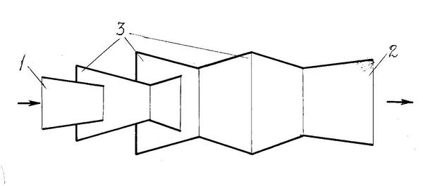
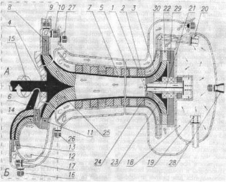
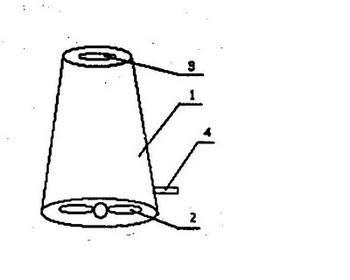
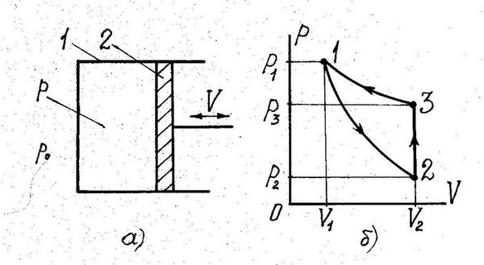
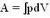
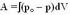

Воздушные двигатели


Время, пространство, эфир, о которых, как
источнике дармовой энергии, шла речь в наших предыдущих публикациях,
вещи нематериальные. В них нечему двигаться, нагреваться, накапливать и
преобразовывать энергию, а если бы они её и содержали, то было бы
нечем передать турбинам, поршням, электронам тока и прочим материальным
объектам. Невозможность создания двигателей на их основе очевидна.
Поэтому более трезвые изобретатели perpetuum mobile берут в качестве
топлива своих аппаратов объекты материальные – воздух, воду, песок,
различные поля, окружающую среду и т.д. Рассмотрим двигатели на воздухе.
При словах «воздушный двигатель» сразу представляются ветряки, которые в
довоенное время в СССР качали воду из колодцев, а сейчас в ряде стран
Запада обеспечивают до 10 % потребляемой электроэнергии. В
ветродвигателях используется энергия ветра, а фактически – Солнца, так
как ветер создается неравномерным нагревом земли солнечным светом.
Поэтому ветровую энергетику, строго говоря, нельзя назвать
альтернативной, она уже давно стала традиционной, и мы её здесь
рассматривать не будем.
У традиционных ветродвигателей есть один существенный недостаток,
связанный с тем, что ветер то дует, то нет, то он слишком сильный и
ломает лопасти двигателя, то слишком слаб и не может его провернуть.
Поэтому приходится «сидеть у моря и ждать погоды». Наших
изобретателей это не устраивает. Они руководствуются заветом Мичурина:
«Мы не можем ждать милостей от природы, взять их у неё – наша задача».
Для этого необходимый ветер, т.е. воздушный поток, они создают
сами.
Выдающихся результатов в этом направлении добился заслуженный
изобретатель Румынии из города Москвы, художник, профессор, академик
Всемирной международной академии инновационных технологий Н.А.
Шестеренко. Он изобрел саморазгоняющее сопло, которое скромно назвал
«Насадок Шестеренко», получил на него около двух десятков патентов [1],
провёл успешные испытания и дал интервью известному популяризатору
лженауки С. Кашницкому из «Московского комсомольца» [2] (статья
Кашницкого также опубликована под именем Даниила Земляка в газете «На
грани невозможного» [3]). Шестеренко якобы ещё в 1985 – 1988 годах
получил на сопло три авторских свидетельства, однако основные
формулировки в описании изобретений зашифровал так, что, даже сложив три
описания вместе, понять секрет устройства было невозможно. Однако в
последнее время американцы раскрыли секрет изобретателя, и он начал
открытое патентование своего детища.
Сопло или, по словам автора, «управляемый ураган» представляет собой
трубку с различными (в зависимости от номера патента) перетяжками и
вставками (рис. 1). Сопло засасывает воздух с узкого конца 1 и
выбрасывает его со сверхзвуковой скоростью с широкого 2. Никакого
топлива для этого не

Рис. 1
нужно, так как, по словам автора, в карманах 3 происходит самозарядка
потока энергией. Для запуска двигателя достаточно дунуть или свистнуть в
трубку, а в дальнейшей работе вплоть до физического износа
ревущего аппарата внешняя энергия не нужна. Если на выходном срезе сопла
поставить турбину с генератором, то получим бесплатный электрический
ток. Но лучше всего сопло ставить на самолет – без керосина достигнем
гиперскорости! На базе такого реактивного двигателя автор обещает
создать околоземный летательный аппарат, не потребляющий топлива. Что
касается испытаний, то первыми удачно запустили «насадок Шестеренко»
якобы австралийцы в 2002 году. Затем американцы, раскрыв секрет
изобретателя, поставили насадок на ракету и в 2004 году запустили её в
космос. Ракета сгорела, подтвердив идею автора. В России Шестеренко
провёл испытания макета двигателя на свой страх и риск. Однако после
того, как он дунул в трубочку, струя воздуха стала саморазгоняться, и
когда поток достиг скорости больше 10 М, двигатель сгорел из-за трения
воздуха о стальной корпус. Поэтому сейчас проверить утверждения автора
невозможно.
Люди тысячи раз дули в различные трубки, но кроме свиста ничего не
получали. Поэтому с уверенностью можно сказать, что и у Шестеренко
никакого разгона воздуха никогда не было и не могло быть. Если бы в
точках 3 и образовывался вакуум, как считает автор, то он бы засасывал
воздух как с входного конца трубы 1, так и с выходного 2, не создавая
тяги. Любая труба, особенно с перетяжками, не разгоняет проходящего
потока воздуха, а тормозит его. К тому же, в закрытой трубе неоткуда
взяться воздуху, которого при усилении скорости должно выбрасываться
больше, чем засасывается. Поэтому насадок Шестеренко и его испытания –
это плод фантазии автора, который, оказывается, является художником,
пишущим картины, которые «излучают целительную энергию». Шестеренко
написал три книги, где своё детище связал с древнеарийским «солнечным
крестом».
Несмотря на безумство идеи, у изобретателя-фантазера появились
поклонники и продолжатели. Ему верит журнал ИР (№ 9/2004) и
восхищен В.Н. Власов из академии Тринитаризма, который улучшил
сопло Шестеренко, придав ему более плавный профиль [4].
По сообщениям СМИ, Е.И. Андреев из Санкт-Петербурга открыл процесс
автотермии, позволяющий автомобилю сжигать обычный атмосферный воздух,
практически не потребляя топлива и не образуя токсичных выбросов. Он
издал книгу [5] и подал заявку на изобретение своего «оптимизатора
воздуха» [6]. В 2004 году изобретатель демонстрировал работающий
на обработанном оптимизатором воздухе автомобиль ВАЗ-2106, у которого из
трубы якобы выходил водяной пар и сыпался порошок графита. Сам он, как и
сотни других автомобилистов, по его словам, не заправляются бензином, а
питаются атмосферным воздухом уже несколько лет. Цена автотермической
коробочки составляет всего 4000 рублей, а ездить на ней можно хоть всю
жизнь! Когда же они появятся в открытой продаже?
Наиболее детальную проработку двигателей на искусственных воздушных
струях дал Б. Кондрашов [7]. Он не только нашел бестопливный способ
преобразования энергии атмосферы, не только теоретически просчитал все
варианты своего двигателя и детально разработал конструкцию, но также
провёл испытания и подал международную заявку [8].

Рис. 2
Двигатель Кондрашова (рис. 2) содержит реактивное сопло 1 с
эжекторной насадкой 2. В сопло 1 подается сжатый воздух из баллона 18.
Воздух крутит турбины 3, 4. На полом валу 5 турбины снаружи размещены
компрессоры 6, 7, закачивающие воздух обратно в баллон 18. На этом цикле
происходит увеличение энергии в 2,4 раза, что, по словам автора,
подтверждено как экспериментально, так и методами численного
моделирования. Остается к валу 5 подсоединить динамомашину, и
будет электростанция, которой не нужны нефть, газ или уголь. А можно и
напрямую использовать вал как привод колёс автомобиля или винтов
корабля.
Достоинством аппарата Кондрашова является замкнутый цикл работы воздуха.
Поэтому его можно использовать не только в атмосфере, но и в космосе, и
на подводных лодках. Как и у вышеописанных аппаратов, его единственным
недостатком является неработоспособность, связанная с отсутствием
движущей силы воздушной струи. Если же изобретатель опровергнет это
экспериментально, построив двигатель целиком, то слава и премия
Глобальная энергия ему обеспечены.
Лет десять назад один заслуженный изобретатель предложил наставить по
стране трубы километровой высоты, а в них турбины. По его мнению, воздух
по трубам с большой скоростью будет подниматься вверх, вращая турбины и
соединенные с ними электрические генераторы, решив все энергетические
проблемы. К этой идее он пришел, видимо, глядя на дым печных труб и
тепловых электростанций. Однако не учёл, что дым в трубах (как и пар в
градирнях), поднимается вверх потому, что он более горячий и более
лёгкий, чем атмосферный воздух. В равновесных условиях, когда
температуры воздуха внутри трубы и снаружи равны, никакой выталкивающей
силы не будет, и воздух останется неподвижным.
Что-то подобное по внешнему виду предлагают сейчас сотрудники Тувинского
института комплексного освоения природных ресурсов СО РАН из города
Кызыл. Они ищут заказчика на создание генератора тепла на основе
самовакуумирующейся вихревой газовой трубы [9]. В их трубе 1 (рис. 3)
воздух под действием вентилятора 2 засасывается через диффузор 3.

Рис. 3
В трубе он разделяется на холодную и горячую составляющие, после чего
горячий воздух через трубку 4 идет на отопление. Разделение молекул
газа по скоростям, как известно, может делать только демон Максвелла.
Тувинцам удалось создать такого демона с помощью эффекта Ранка! По
данным авторов, стоимость устройства будет составлять всего 500 – 700
рублей, а на доработку и создание промышленного образца просят 1,7
миллиона рублей. Об энергозатратах на получение калории тепла учёные не
сообщают. Не лучше ли вместо их аппарата купить в магазине
электротепловентилятор?
Идеальная тепловая машина работает по циклу Карно, но КПД его ниже
единицы. Кандидат физмат наук из Московского центра государственной
метеорологической службы Б.В. Карасёв придумал свой цикл, КПД которого
по его расчётам должен составлять 3 и даже больше [10]. Аппарат
представляет собой цилиндр 1, наполненный обычным воздухом, и движущийся
в нём поршень 2 (рис. 4a). Само собой разумеется, что также имеются
кривошипно-шатунный механизм, коленчатый вал и маховик. На участке 1 – 2
придуманного цикла (рис. 4б) осуществляется быстрое адиабатическое
расширение воздуха в цилиндре внешней силой, на изохоре 2 – 3 – тепловой
контакт с окружающей средой, а на участке 3 – 1 идет медленное
изотермическое сжатие воздуха. При расширении на участке 1 – 2
температура воздуха понижается и становится ниже температуры окружающей
среды. Поэтому на участке 2 – 3, где температура в цилиндре повышается,
идет отбор тепловой энергии от внешней среды. На участке 3 – 1 поршень
засасывается в цилиндр, совершая полезную работу. При этом, по расчету
автора, полезная работа А2 больше затраченной на расширение А1, что и
обеспечивает режим вечного движения.

Рис. 4
Заблуждение кандидата наук связано с тем, что он рассчитывает работу по формуле

, где p – давление внутри цилиндра, а V- объем. Если же эту задачу дать школьнику, то он найдет работу как
, где ро – внешнее давление. У ученого затраченная работа А1 получилась меньше совершенной А2, так как среднее давление на участке цикла 1 - 2 меньше, чем на участке 3 – 1. У школьника получилась бы обратная картина: А1 больше А2, так как средняя сила вытаскивания поршня из цилиндра, определяемая разностью давлений снаружи и внутри цилиндра (р0 – р), больше силы втягивания на участке 3 – 1 при одинаковом ходе поршня. Школьник-то знает физику, а ученый оказался двоечником!Можно, оказывается, и не изобретать новых циклов, а ограничиться старым циклом Карно и создать вечный двигатель на его основе. Для этого достаточно в формуле для КПД = (Тн – Тх)/Тн подставить не абсолютную температуру в Кельвинах, а используемую в быту температуру в градусах Цельсия, как это делает изобретатель из г. Омска В. Федоров [11]. Например, взяв температуру нагревателя Тн = 20 оС, а холодильника Тх = -180 оС, получим КПД = 10, т.е. 1000 %. Конструкция двигателя будет аналогична предыдущей (рис. 4), а в качестве рабочего тела используется тот же воздух. Теперь, как отмечает автор, мы можем обойти «всепланетную нефтяную мафию» и спасти цивилизацию от экологической катастрофы. Однако, если температуры нагревателя и холодильника, как и положено, выразить в Кельвинах: Тн = 293 К, Тх = 93 К, - то КПД цикла окажется равным 68 %. Следовательно никакой энергии мы не получим, и для перемещения поршня вынуждены сжигать ту же нефть. Наши комментарии были даны в [12].
Таким образом, воздух не может решить энергетические проблемы человечества.
1. Пат. РФ №№ 2206409, 2206410, 2212282, 2267360, 2272678, 2277441,
2303491, 2304471, 2304474, 2338666, 2346753, 2354459, 2356637, 2361679,
2361680 и др.
2. С. Кашницкий. Ошейник для урагана. Московский комсомолец, № 686 от 14 мая 2000 г.
3. Д. Земляк. Ошейник для урагана. На грани невозможного, № 9(340), 2004
4. В.Н. Власов. О струйных газовых энерготехнологиях. Академия Тринитаризма, публ. 14825. М., 2008
5. Е.И.Андреев. Естественная энергетика. Нестор, СПб, 2005
6. Пат. заявка РФ № 2002124489
7. Б. Кондрашов. Принципиально новые – струйные энергетические технологии. Инженер, 2006, № 7; № 8, с. 23 – 25, № 10, с. 26 – 27
8. PCT/RU 2002/000338
9. Вихревой нагреватель воздуха. Рекламный проспект. Тувинский институт
комплексного освоения природных ресурсов СО РАН. E-mail: tikopr@tuva.ru
10. Б.В. Карасёв. Способы извлечения работы из среды с постоянной
температурой (сообщение второе). В сб. «К.Э. Циолковский: исследование
научн. наследия». Калуга, 2008, с. 264 – 265
11. В. Федоров. Воздушные двигатели. Инженер, 2003, № 7, с. 12 – 14